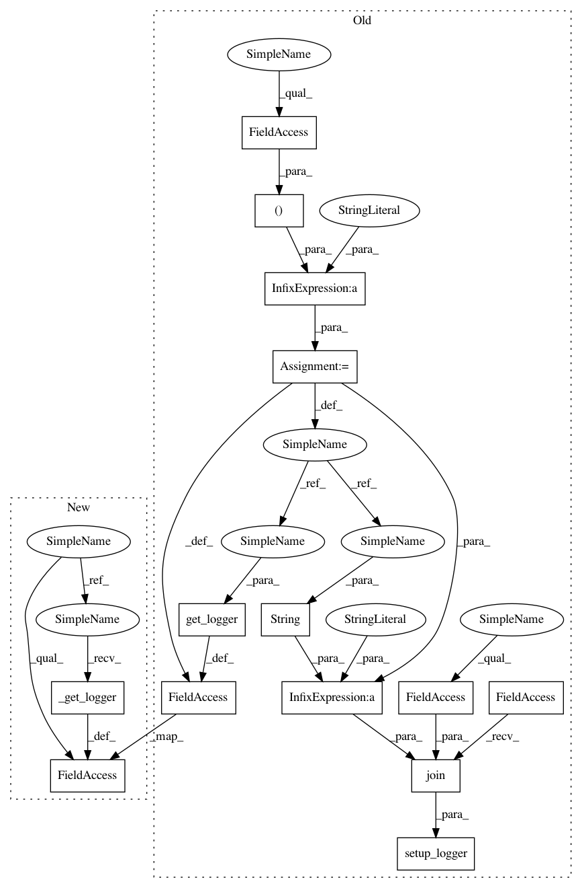

3da7e9997d00e36c56ca9d184d552b7c1c91ecbc,autosklearn/automl.py,AutoML,fit,#AutoML#Any#Any#Any#Any#Any#Any#,189
Before Change
self._dataset_name = dataset_name
self._stopwatch.start_task(self._dataset_name)
logger_name = "AutoML(%d):%s" % (self._seed, dataset_name)
setup_logger(os.path.join(self._tmp_dir, "%s.log" % str(logger_name)))
self._logger = get_logger(logger_name)
if isinstance(metric, str):
metric = STRING_TO_METRIC[metric]
After Change
self._dataset_name = datamanager.name
self._fit(self._datamanager)
def fit(self, X, y,
task=MULTICLASS_CLASSIFICATION,
metric="acc_metric",
feat_type=None,
dataset_name=None):
if dataset_name is None:
m = hashlib.md5()
m.update(X.data)
dataset_name = m.hexdigest()
self._backend.save_start_time(self._seed)
self._stopwatch = StopWatch()
self._dataset_name = dataset_name
self._stopwatch.start_task(self._dataset_name)
self._logger = self._get_logger(dataset_name)
if isinstance(metric, str):
metric = STRING_TO_METRIC[metric]
In pattern: SUPERPATTERN
Frequency: 3
Non-data size: 14
Instances
Project Name: automl/auto-sklearn
Commit Name: 3da7e9997d00e36c56ca9d184d552b7c1c91ecbc
Time: 2016-04-25
Author: feurerm@informatik.uni-freiburg.de
File Name: autosklearn/automl.py
Class Name: AutoML
Method Name: fit
Project Name: automl/auto-sklearn
Commit Name: 3da7e9997d00e36c56ca9d184d552b7c1c91ecbc
Time: 2016-04-25
Author: feurerm@informatik.uni-freiburg.de
File Name: autosklearn/automl.py
Class Name: AutoML
Method Name: fit_automl_dataset
Project Name: automl/auto-sklearn
Commit Name: 3da7e9997d00e36c56ca9d184d552b7c1c91ecbc
Time: 2016-04-25
Author: feurerm@informatik.uni-freiburg.de
File Name: autosklearn/automl.py
Class Name: AutoML
Method Name: run